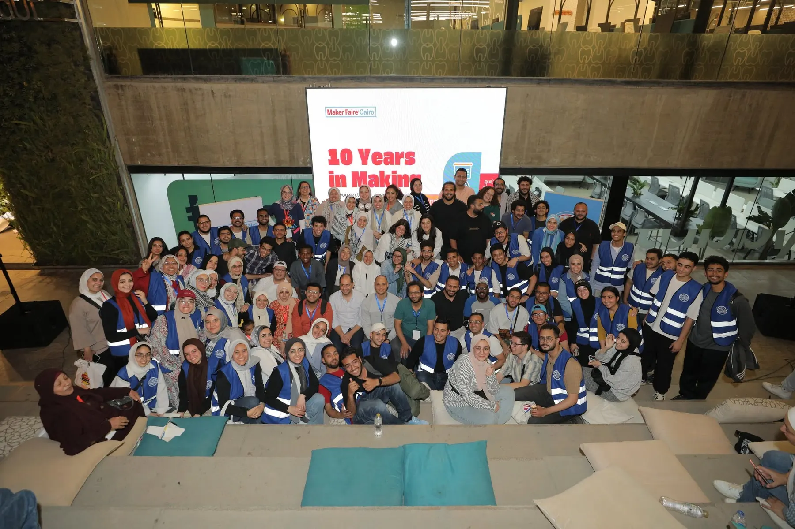
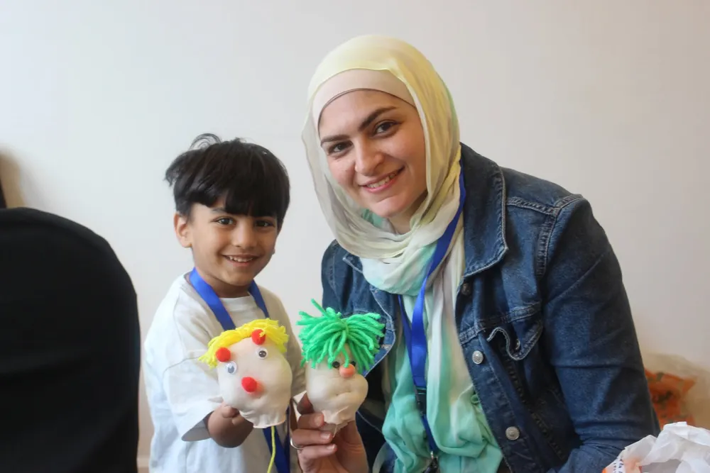
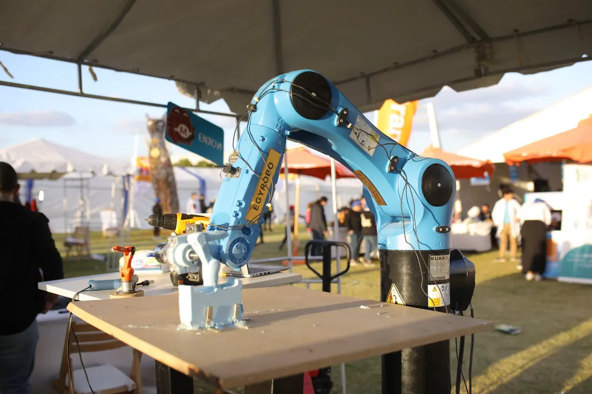
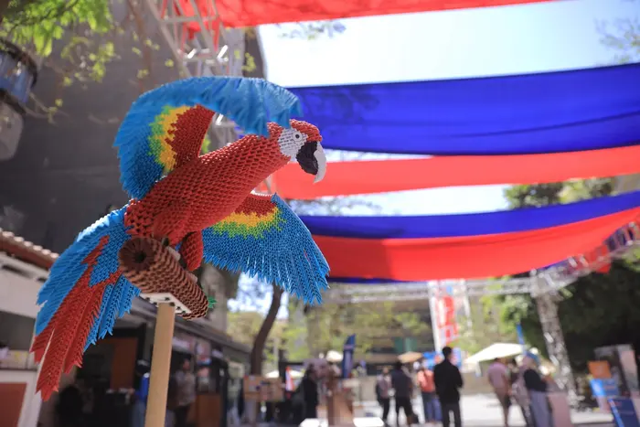
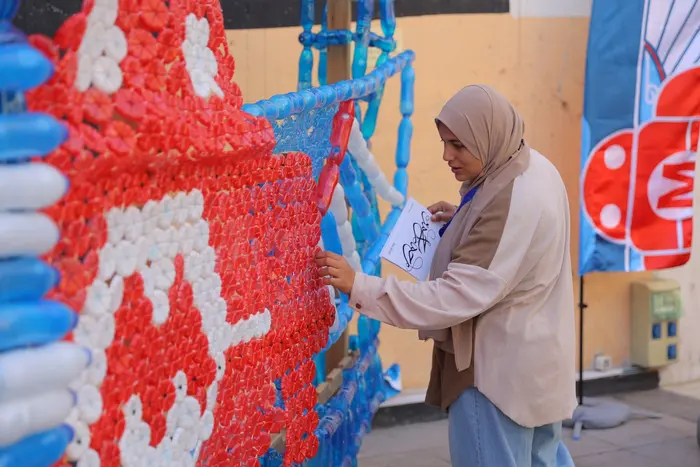
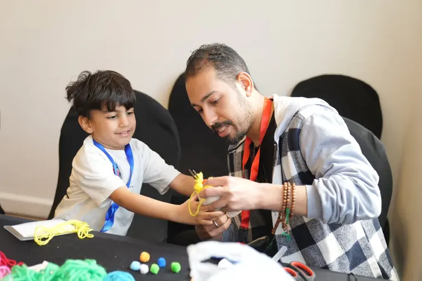
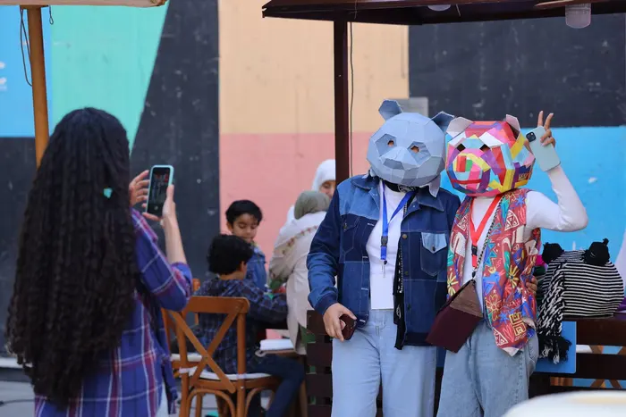
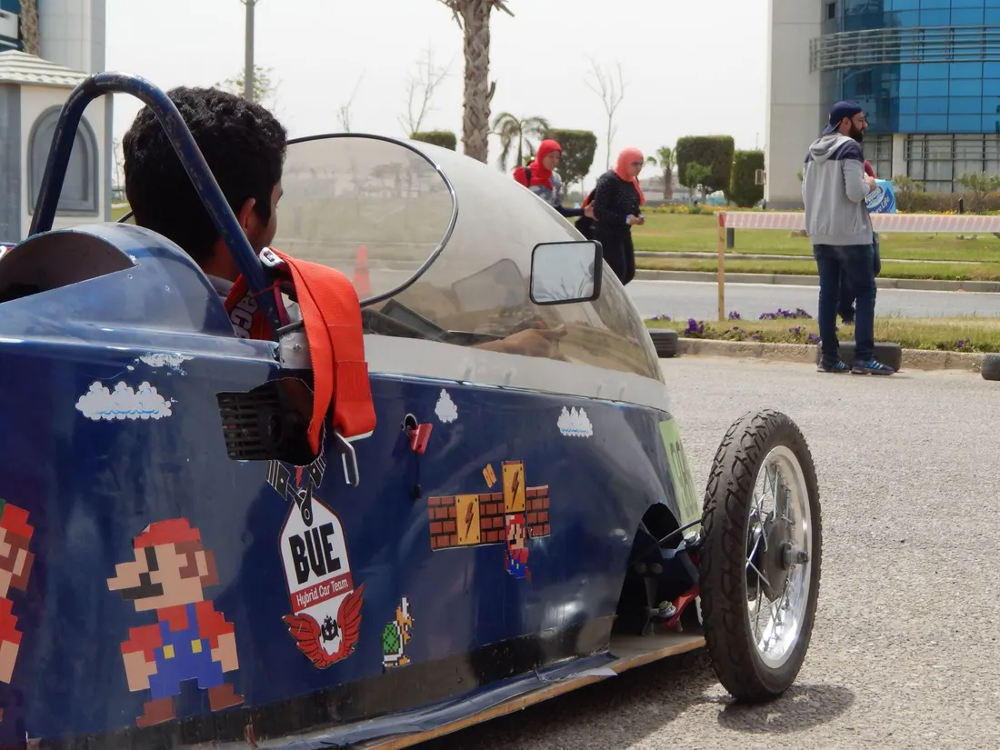
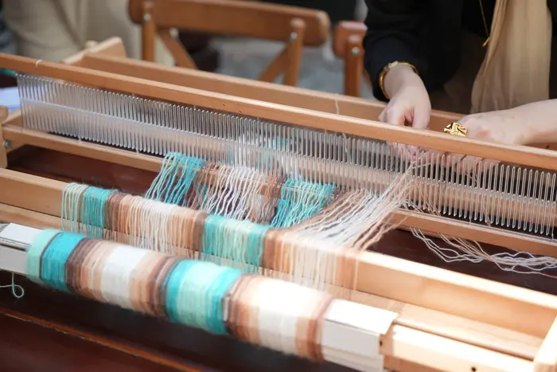
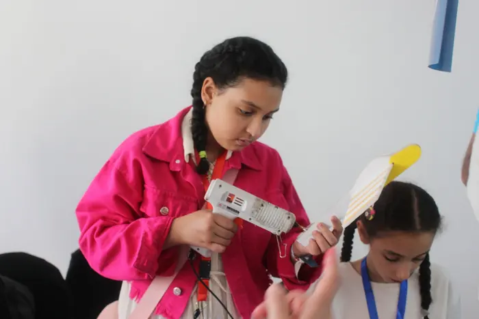

Stay tuned
Maker Faire Cairo is coming back.
Egypt's festival of makers, crafts and technology returns in 2027. Dates, venue and the call for makers will be announced soon. Ask to be notified and you'll hear first.
Or email us at makerfairecairo@san3atech.com with "Notify me".

About
A place to show what you make.

Maker Faire Cairo has been one of the first and biggest Maker Faires in the MENA region since 2015. It's a family-friendly DIY festival where people show what they make and share what they're learning.
Expect exhibitions, live demos, hands-on workshops, talks and performances, covering everything from crafts and arts to robotics, digital fabrication, science and permaculture.
A maker might bake bread or quench steel, build chairs or paint portraits. If you make things, you belong here.
Previous editions
Where we've been
The first Maker Faire Cairo brings the city's maker communities together under one roof.
Nine years of faires, with speakers from Make:, the Fab Foundation, Arduino and the Raspberry Pi Foundation.
The 10th edition, "Dots Connected", runs over two days for the first time: 2,500+ visitors, 100 exhibitors, 50+ workshops.








Get involved in 2027
Want to take part?
Exhibit
Show your project, run a station or bring your makerspace.
Teach
Lead a workshop, give a talk or put on a live demo.
Partner
Support Egypt's maker community and meet it in person.
makerfairecairo@san3atech.com